Lab P4 - AM and FM Sinusoidal Signals
Chirps and Beats The following code completes the lab exercises found in https://dspfirst.gatech.edu/chapters/03spect/labs/AMFMSignalsLab/AMFMSignalsLab.pdf
Contents
4.1 - Beat Notes
Beat notes are the sum of two sinusoidal signals of slightly different frequency.
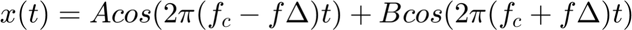
The following code generates a beat using the function beat.m, displays a segment of the signal, and plays the sound.
The resulting wave form has two signals: A lower frequency envelope signal and a higher frequency signal underneath the envelope. The period of the envelope is 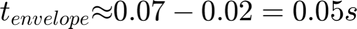. Which is approximately 20Hz The period of the higher frequency component is  . Which is approximately 1000Hz This matches the input parameters 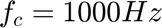 and 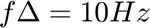 which is half of the frequency difference.
. Which is approximately 1000Hz This matches the input parameters 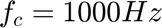 and 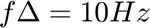 which is half of the frequency difference.
% Generate a beat A = 10; B = 10; fc = 1000; delf = 10; fsamp = 11025; dur = 1; [x, t] = beat(A, B,fc, delf, fsamp, dur); % Display the first 0.2 seconds of the signal idx = find(t == 0.2); figure(); fig1 = plot(t(1:idx), x(1:idx)); xlabel("t [s]"); title("Beat Signal"); % Show data tips for frequency measurements datatip(fig1, 0.0243084, -0.311649); datatip(fig1, 0.0746485, 0.262887); datatip(fig1, 0.162993, -13.6847); datatip(fig1, 0.163991, -12.7365, 'Location', 'southeast'); % Play the sound and save it sound(x, fsamp); audiowrite("beat1.wav", x/max(x), fsamp); % Scale values between [-1, 1]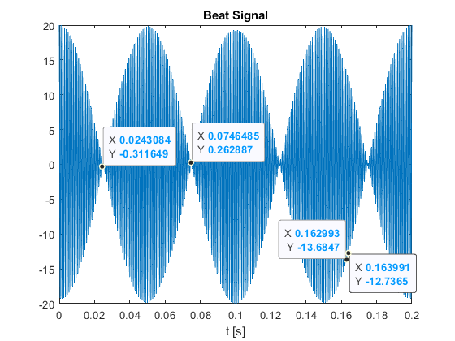
4.2 - More on Spectrograms
In a beat signal, if the magnitude of the two component signals is the same, , then the beat signal becomes
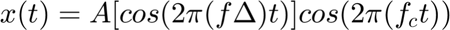
This more clearly shows that the amplitude of the signal varies with time.
The following generates a beat signal using the above equation and then shows two spectrograms with window length 2048 and 16.
The results of spectrogram with the larger window length shows two high intensity bands straddling 2000Hz, which corresponds with the base signal 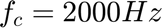 and 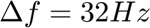. The smaller window length shows similar resuls, however there is much less resolution on the correct frequency bands, resulting in a thick black band covering a large region around 2000 Hz
% a) - Create and plot the beat signal delf = 32; dur = 0.26; fsamp = 11025; fc = 2000; A = 1; B = A; [x, t] = beat(A, B,fc, delf, fsamp, dur); % Plot the full signal figure(); plot(t, x); xlabel("t [s]"); title("Beat Signal"); % Play the sound and save it sound(x, fsamp); audiowrite("beat2.wav", x/max(x), fsamp); % Scale values between [-1, 1] % b) - Find the spectrogram using a window length of 2048 figure() subplot(1, 2, 1) spectrogram(x, 2048, [], 2048, fsamp); colormap(1-gray(256)); % c) - Find the spectrogram using a window length of 16 subplot(1, 2, 2) spectrogram(x, 16, [], 16, fsamp); colormap(1-gray(256));
 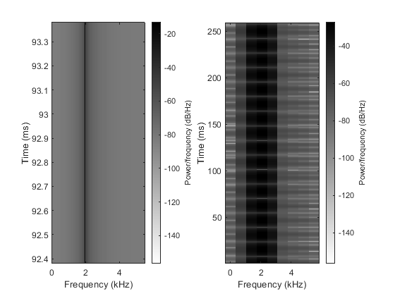
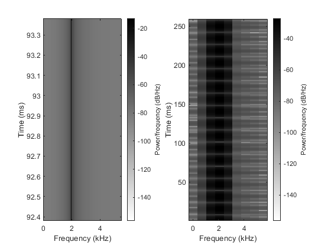 4.3 - Spectrogram of a Chirp
Chirp signals are a linear sweep of a frequency range. The signal is defined as 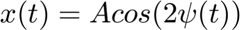
Where,
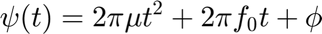
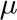 is the slope of the frequency sweep.
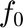 is the starting frequency.
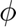 is a shift that we set to zero.
A chirp with a starting frequency of 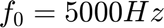 and 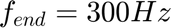 is generated with the function mychirp.m, and the spectrogram is plotted. The spectrogram does show a zigzag between 5000Hz and 300Hz
% Generate the chirp dur = 3; fsamp = 11025; f1 = 5000; f2 = 300; [x, t] = mychirp(f1, f2, dur, fsamp); % Plot the signal figure(); plot(t, x); xlabel("t [s]"); title("Chirp Signal"); % Save the signal (audio is played inside the function) audiowrite("chrip.wav", x/max(x), fsamp); % Scale values between [-1, 1] % Plot the spectrogram figure(); spectrogram(x, 2048, [], 2048, fsamp); colormap(1-gray(256));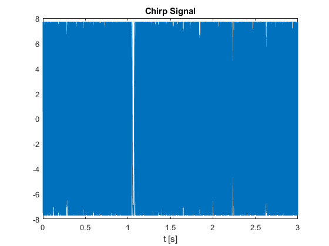 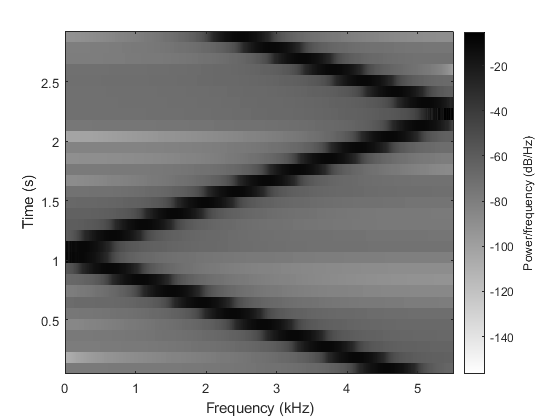